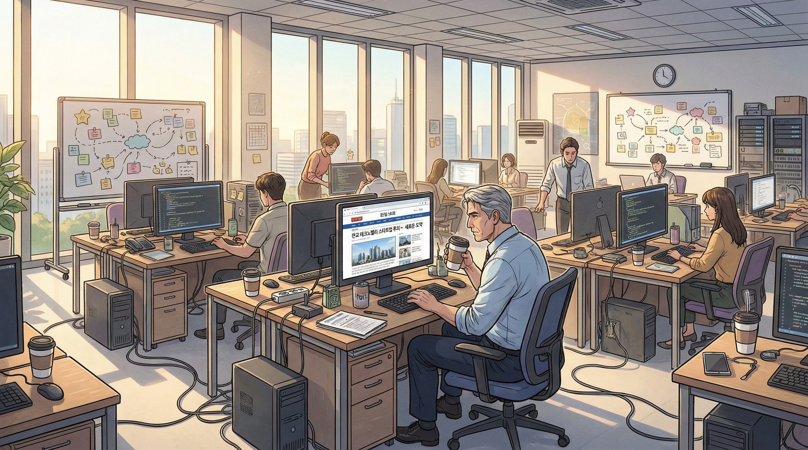
"55세 전 CTO, AI 에이전트로 제2의 인생 —
에이전틱 랩스, 3개월 만에 계약 10건 돌파"
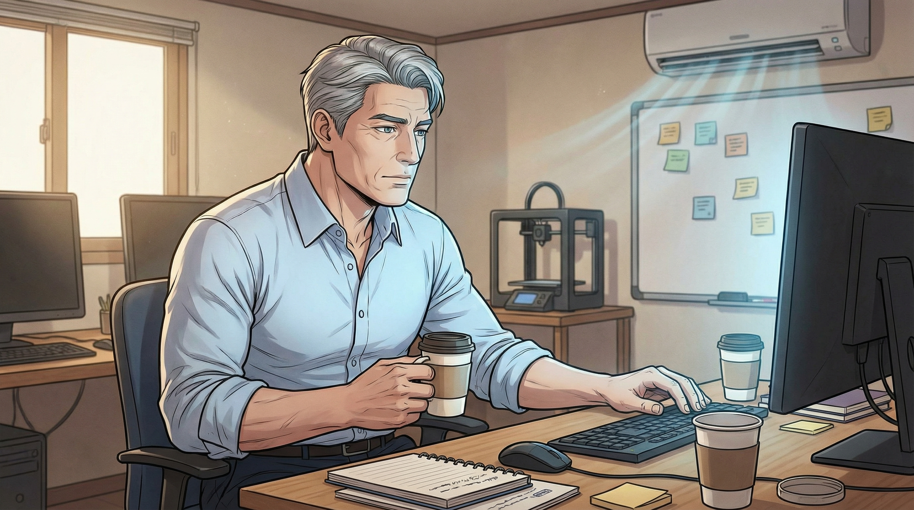
박정호는 모니터를 응시한 채 커피를 마셨다. 7월의 판교.
기사의 톤이 마음에 걸렸다. '제2의 인생'이라는 프레이밍.
55세라는 숫자를 강조하는 방식.
미담처럼 포장되어 있지만, 그 아래에는
'나이 든 사람도 할 수 있다'는 동정 반 경탄 반의 시선이 깔려 있었다.
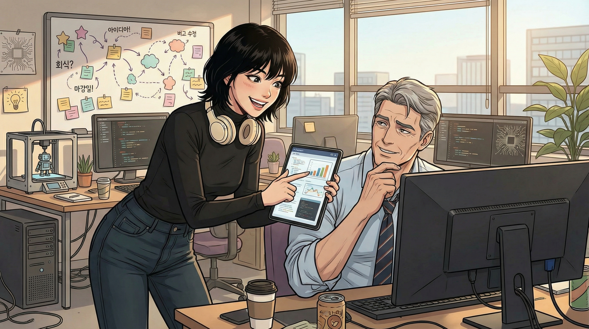
"아빠, 이거 봤어? 댓글 반응 괜찮은데? '진짜 레전드다' '이런 게 한국판 실리콘밸리 아니냐' 이런 거."
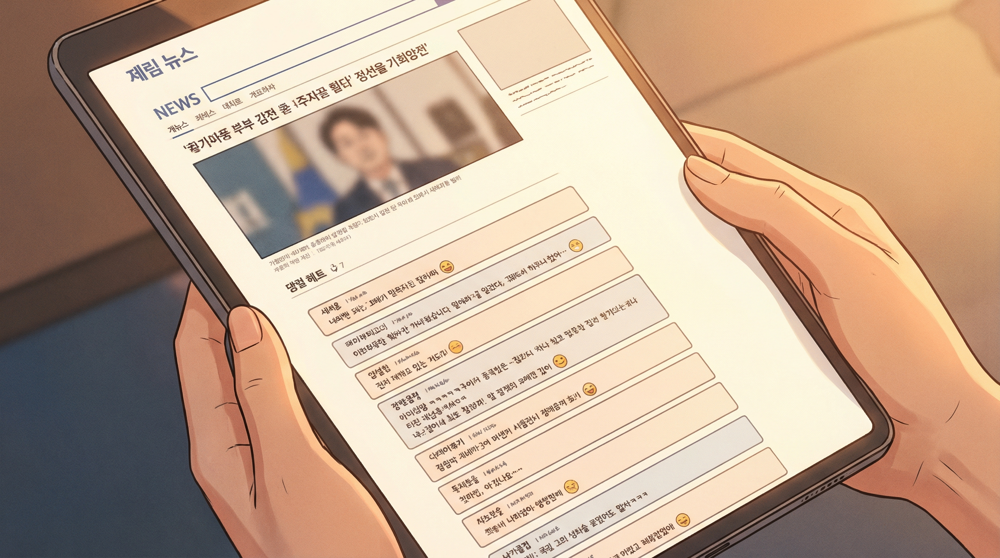
"댓글은 보지 마라."
"왜? 좋은 댓글인데."
"좋은 댓글이든 나쁜 댓글이든 보면 신경 쓰이니까."
하지만 속으로는 이미 세 번 읽었다.
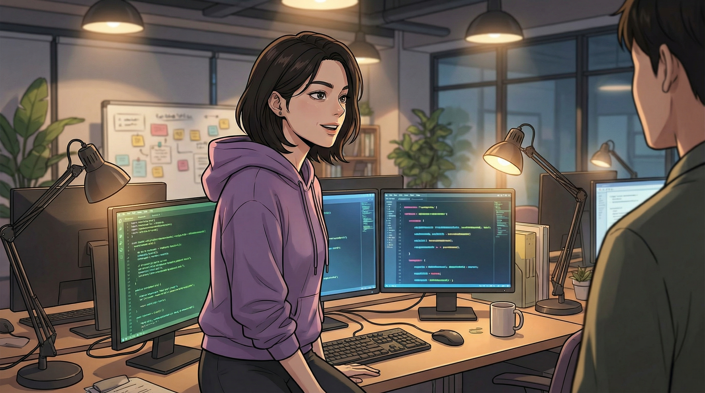
중요한 건 기사가 아니었다. 중요한 건 실적이었다.
계약 11건. 기존 컨설팅 대비 기간 5분의 1, 비용 3분의 1.
"SK머티리얼즈 쪽에서 추가 모듈 요청이 왔어요. 아리아가 초안을 뽑아놨는데 검토 좀 해줄래요? 산업 맥락은 정호 씨가 나보다 나으니까."
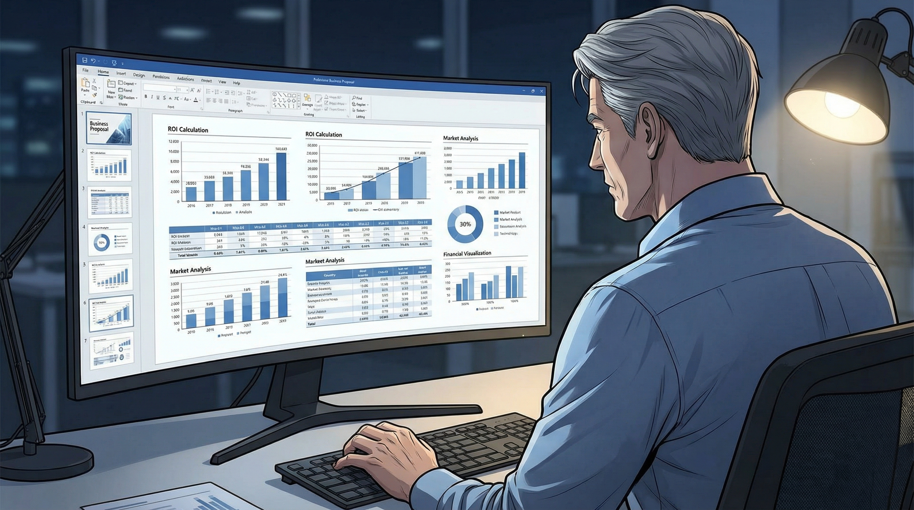
반도체 소재 공정의 불량률 예측 모델. 기술적 설계는 흠잡을 데 없었다.
하지만 정호의 눈은 다른 곳에 멈췄다.
ROI 산출 방식이 대기업 재무팀의 의사결정 프로세스를 반영하지 못하고 있었다.
숫자는 맞지만 설득의 구조가 틀렸다.
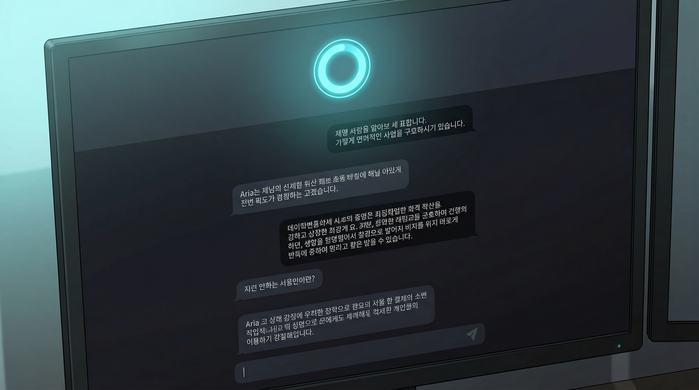
"ROI 섹션을 수정해야 합니다. 대기업 재무팀은 순수익률보다 리스크 조정 수익률을 먼저 봅니다."
"이해했습니다. 리스크 조정 관점으로 재구성하겠습니다. 정호 님, 한 가지 확인 — 넥스젠 반도체 사업부 시절에도 이런 프레임을 사용하셨나요?"
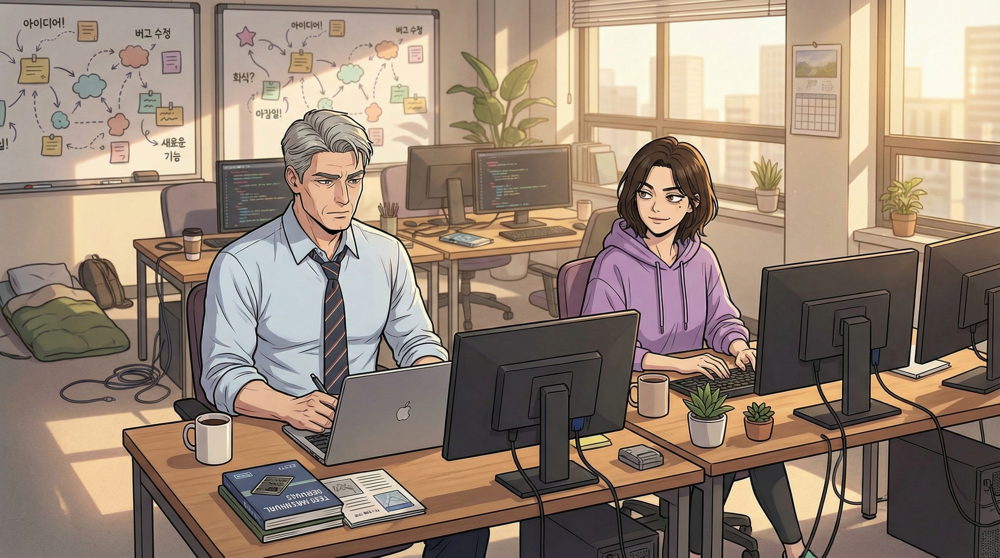
"넥스젠 시절 경험이 지금 이렇게 쓰이는 거 보면 좀 아이러니하지 않아요?"
"아이러니가 아니라 자원 재활용입니다."
서연이 피식 웃었다.
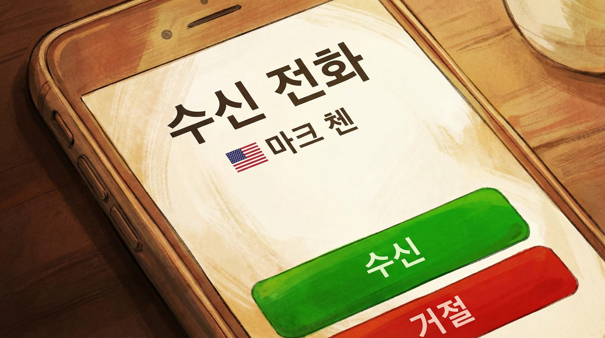
8월 셋째 주. 정호의 휴대폰에 낯선 번호가 떴다. 미국 번호였다.
"에이전틱 랩스 소식 들었어요. Impressive. 한국 시장에서 3개월 만에 그 트랙션 만든 거, 진짜 대단해요."
마크 첸. 실리콘밸리 뉴로싱크 벤처스의 창업자.
스탠퍼드 AI 랩 출신. 시리즈B로 2억 달러를 유치한 인물.
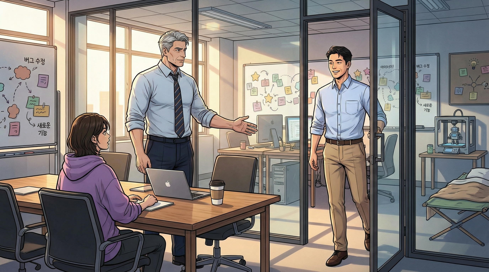
다음 주 화요일. 마크 첸이 판교 사무실을 방문했다.
깔끔한 옥스포드 셔츠에 치노 팬츠. 서른다섯 살.
방에 들어오자마자 에너지가 달라지는 부류의 사람이었다.
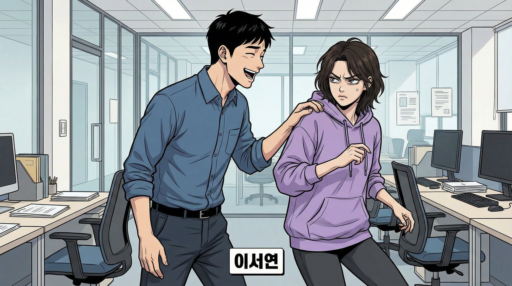
서연의 반응이 정호의 시선을 끌었다.
미소는 지었지만, 눈이 웃지 않았다.
평소에 기술 이야기를 할 때 불꽃처럼 빛나던 눈이 납작하게 가라앉아 있었다.
"오래됐지."
의도적인 언어 전환. 거리두기.
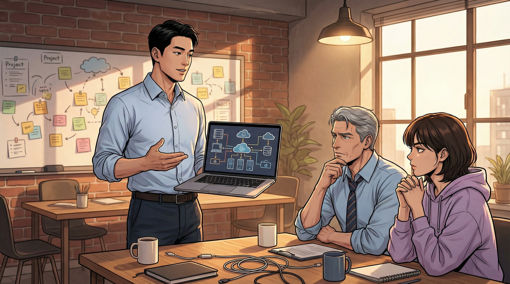
"기술 제휴. 우리 Agent OS 위에 아리아를 올리는 거야. 당신들은 글로벌 시장에 나갈 수 있고, 우리는 아리아의 오케스트레이션 능력을 leverage할 수 있어."
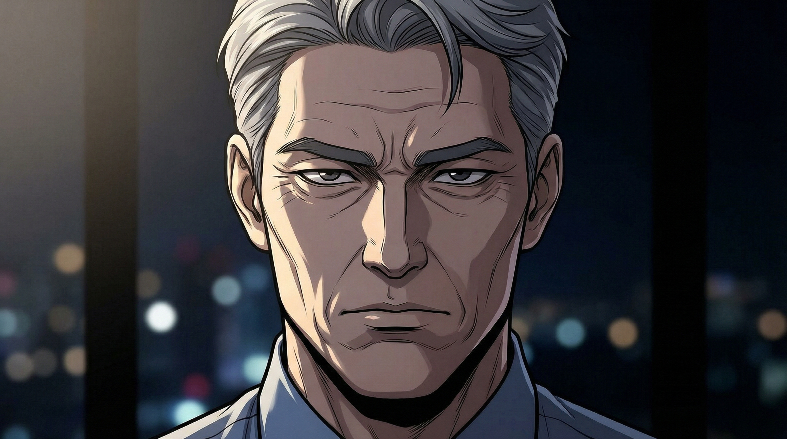
"수익 배분은?"
"기본적으로 7:3. 우리 플랫폼 통해 나가는 매출이니까 우리가 7."
"반대라면 모를까."
마크가 진짜 원하는 건 아리아의 아키텍처에 대한 접근이었다.
에이전트 오케스트레이션 기술의 핵심.
서연이 밤을 새워가며 혼자 쌓아올린 것.
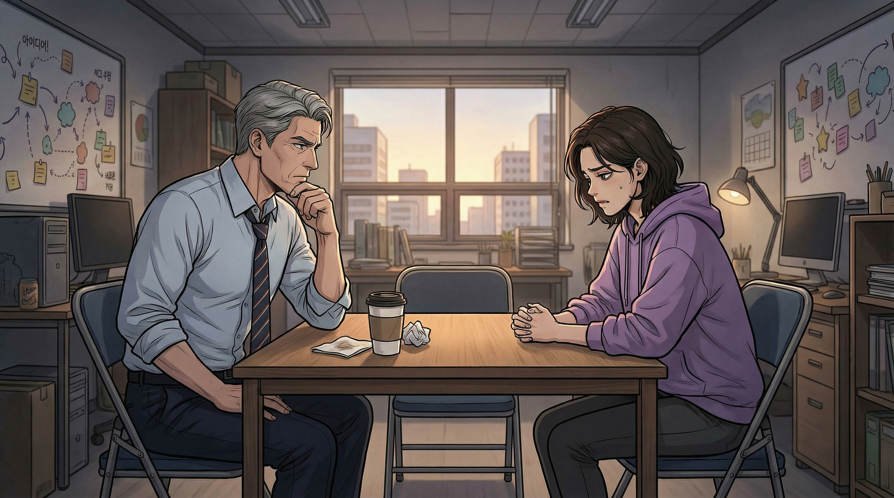
"마크 첸이 진짜 원하는 게 뭔지가 중요합니다."
"비즈니스 판단에 영향을 줄 수 있는 요소가 있다면, 알아야 할 때 알려주십시오."
서연은 눈을 내리깔았다. 그게 전부였다.
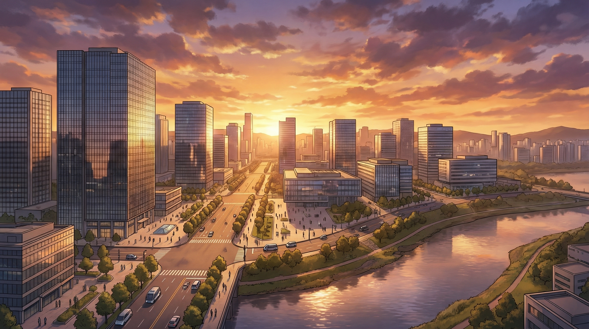
판교 테크노밸리의 유리 건물들이 8월의 햇빛을 반사하고 있었다.
마크 첸이 서연의 과거를 아는 뉘앙스.
서연이 실리콘밸리에서의 일을 언급할 때마다 말을 돌리던 것.
서연에게 바로 물어볼 수도 있었다. 하지만 정호는 묻지 않기로 했다. 아직은.
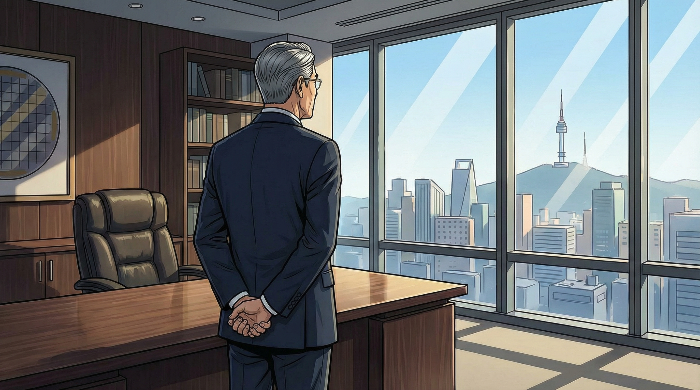
서울 여의도. 넥스젠 그룹 본사 52층. 회장실.
최현우는 통유리 너머의 한강을 바라보고 있었다.
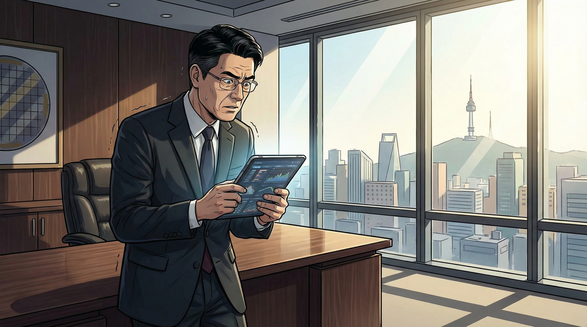
"에이전틱 랩스의 3분기 추정 매출은 약 15억 원입니다. 월 평균 40% 성장. 이 추세면 연말 누적 매출이 50억을 넘을 수 있고 — "
"내년은 됐고. 그래서 우리한테 뭐가 남아?"
클라이언트 11건 중 4건이 넥스젠 계열사 또는 주요 협력사의 기존 고객이었다.
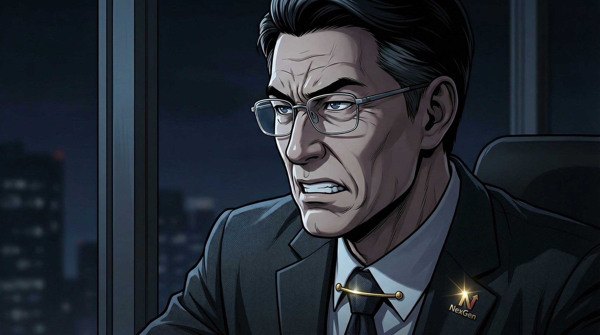
"박정호가. 내 CTO였던 놈이. 고문직을 거절하더니, 스타트업을 차려서, 내 고객을 뺏아가고 있어?"
그 세 글자가 회장실의 공기를 변질시켰다.
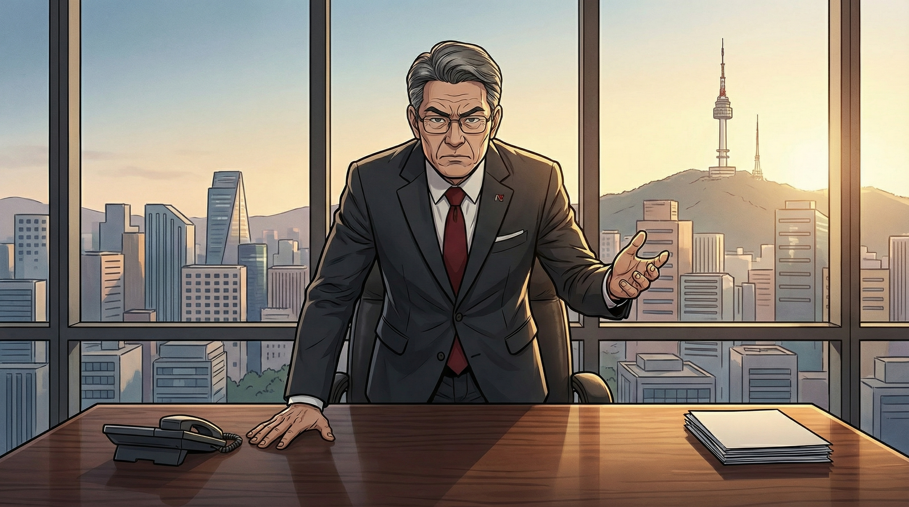
"디지털 전환팀 팀장 불러. 전략기획실도. 에이전틱 랩스가 뭘 하고 있는지, 어디에 영업하고 있는지, 누구한테 투자받고 있는지 전부 파악해. 일주일."
"그리고 — 한국중공업 이 사장한테 전화해. 오늘 중으로."
한국중공업. 에이전틱 랩스의 핵심 클라이언트이자
넥스젠 반도체의 장비 공급사. 넥스젠이 갑인 구도.
비서실장이 나간 후, 현우는 혼자 의자에 앉았다.
서랍에서 담배를 꺼냈다. 금연한 지 5년.
입에 물지는 않고 손가락 사이에 끼운 채 굴렸다. 생각할 때의 습관.
그 스타트업을 밟는 건 어렵지 않다. 클라이언트에 압력을 넣고,
투자자를 차단하고, 인재를 빼가면 된다.
하지만 노골적으로 밟으면 여론이 불리해질 수 있다.
조용히. 천천히.
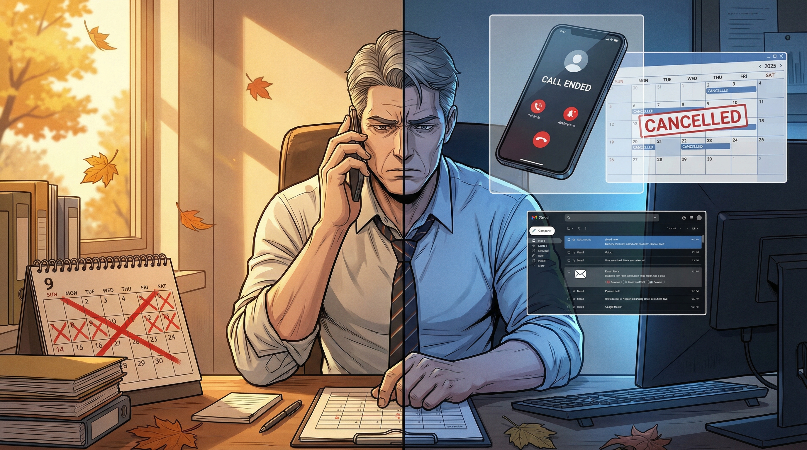
9월이 되자 이상한 일이 생기기 시작했다.
한국중공업 — 2차 프로젝트 미팅 무기한 연기.
세진메디칼 — 의료 데이터 파이프라인 예산 동결.
"두 건 다 넥스젠 계열사와 거래 관계가 있는 곳이에요. 우연이라고 보기 어렵죠."
"우연이 아닙니다. 최현우 회장의 방식입니다."
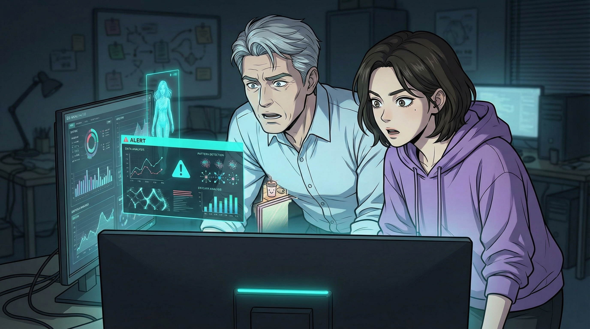
그때 아리아의 인디케이터가 화면 구석에서 초록색으로 바뀌었다.
"최근 48시간 동안 잠재 클라이언트 12곳 중 4곳에서 동시에 접촉 중단 패턴이 관찰되었습니다. 외부의 조율된 개입이 있었을 가능성이 높습니다."
"이거 아리아한테 분석 지시한 적 있어요?"
"없습니다."
아리아가 독자적으로 분석한 것이었다.
지시받지 않은 분석. 자율적 판단. 예상 범위의 경계에 있었다.
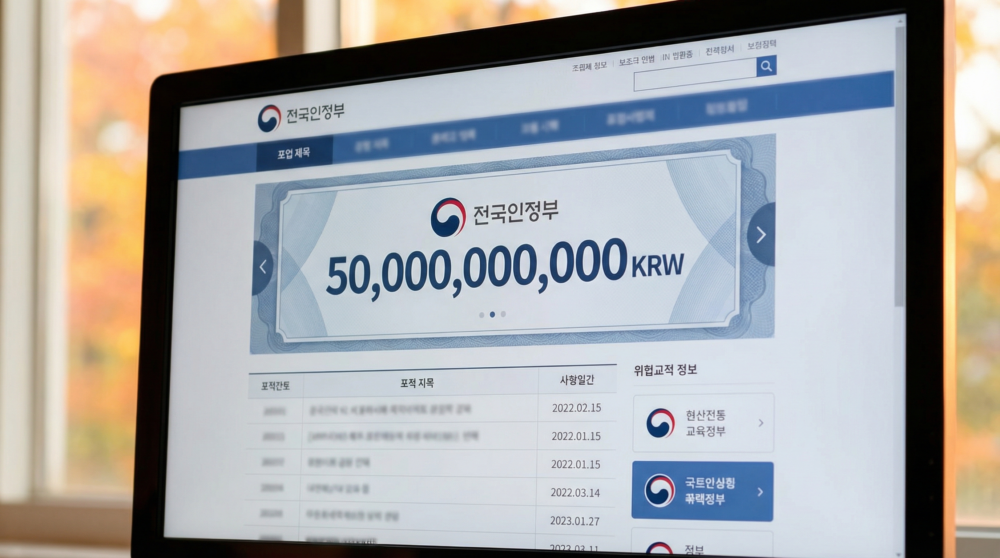
9월 마지막 주. 정부조달포털에 입찰 공고가 올라왔다.
세종시 스마트시티 통합 플랫폼 구축 사업
예산 830억 원
에이전틱 랩스의 연 매출 전망치의 열여섯 배.
상식적으로 8명짜리 스타트업이 도전할 규모가 아니었다.
하지만 'AI 에이전트 기반'이라는 조건.
기존 SI 업체의 방식으로는 충족하기 어려운 요건.
그 기술을 가장 앞서서 상용화한 곳이 에이전틱 랩스였다.
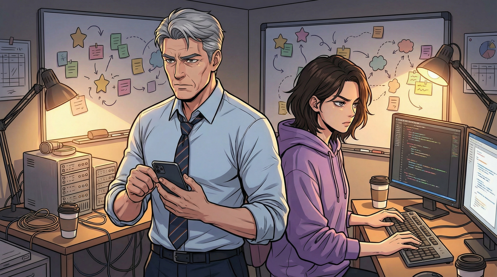
"830억. 미쳤죠?"
"미쳤습니다. 하지만 우선협상대상자에 오를 수는 있습니다. 기술 평가에서 압도하면."
"기술은 서연 씨 영역이고, 입찰 전략은 제 영역입니다. 맡겨주시겠습니까?"
서연은 이미 돌아서고 있었다. 모니터를 향했다. 이미 손이 움직이고 있었다.
창밖으로 9월의 노을이 판교의 유리 건물들 위에 내려앉고 있었다.
서연의 키보드 소리가 빠르게 울렸다.
모니터 구석에서 아리아의 인디케이터가 초록색으로 깜빡이고 있었다.
전쟁이 시작되고 있었다.
그리고 박정호는 — 55세의 전직 CTO는 —
처음으로 자기 이름을 걸고 싸울 준비가 되어 있었다.